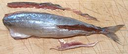
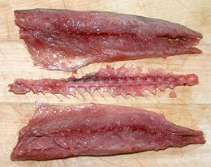

This Indo-Pacific scad is found from the east coast of Africa to the Gulf of California and south to Peru.It is most common from southern Japan to northern Australia. These fish can grow to over 14 inches, but but are commonly around 10 inches and 3-1/2 ounces. They are often sold considerably smaller than that. IUCN Red List LC (Least Concern).
More on Scad.
|


|
This fish is definitely not "white and light", but for those of us who actually like fish, it has a good combination of taste and texture. Raw the flesh is extremely tender, but cooked it is firm, but flakes apart easily. It is a small fish, but quite meaty. IFyour fish are under 7 inches long (TL) they are excellent for frying whole. They have a strong enough flavor to be interesting hot or cold, and, while the head and backbone are too hard to eat, it has no bone or fin problems otherwise. In this small size, see our article Dealing with Tiny Fish where full instructions will be found - and that page features this very fish.IFyour fish are over 7 inches long, you can follow the instructions below.Buying: I have found these frozen, from Vietnam, in one of the large Asian markets here in Los Angles (Alhambra). They were labeled "Layang Scad", packed 9 to a bag, 7 to 8-3/4 inches long and up to 3-7/8 ounces. I have also found them on ice in a Philippine market (Eagle Rock) wild caught in California, 6-1/2 inches and weighing 2 ounces. Scales: This fish is kosher, but you have to be a hungry rabbi with sharp eyes to find any scales - I never have. Skin: The skin on this fish has so little shrink you can toss a skin-on fillet into poaching water and it will barely curve (from top to bottom). The skin is thin and delicate, as is the flesh it's holding together, so I don't recommend attempting to skin this fish. Pan Dressing & Filleting:This is not a difficult fish to work with, but you need a razor sharp filleting knife and a sharp pare of kitchen shears.
Frying:Lightly powder fillets or pan dressed fish with rice flour to prevent sticking. Fillets - first fry skin side up. When half done, flip over. Skin shrink is not a problem.Poaching:Skin shrink is so weak you can poach skin-on fillets with so little curl (top to bottom) it is not a problem. If poaching pan dressed fish, there will be no noticeable shrink at all.Yield: This is a fairly meaty fish so yield is decent. Fish averaging 8-1/2 inches (TL) yielded 1.88 ounces of skin-on fillet (53%). I made no attempt to skin these fillets. Stock: Scad are considered to have too strong a taste to make a good soup stock, and having pan dressed these fish, I had only heads, so I didn't try making stock. |